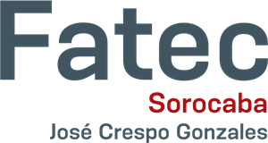

Quem sou eu?
Olá, me chamo José Marcos e sou nascido e criado em Sorocaba. Atualmente curso Análise e Desenvolvimento de Sistemas na FATEC Sorocaba e possuo também formacão técnica em Redes de Computadores no Senac.Possuo conhecimentos em HTML + CSS, Java, Visual Basic, SQL e em administração de servidores Linux
Formação Acadêmica
Faculdade de Tecnologia de Sorocaba
Estou cursando o quinto semestre do curso de Análise e Desenvolvimento de Sistemas na Fatec Sorocaba, com previsão para termino no segundo semestre de 2019. O tecnólogo com esta formação tem noções de gerenciamento, mas sua especialidade é a criação de sistemas informatizados: programação de computadores e desenvolvimento de softwares para ampliar a capacidade dos recursos do equipamento.

SENAC
Durante 2013 e 2016 cursei o curso de Tecnico em Redes de Computadores no SENAC Sorocaba. O tecnólogo desta área participa do projeto, da instalação e da manutenção de redes de computadores nas empresas. Ele define o tipo e o número de unidades, sua configuração e os programas que serão usados para o gerenciamento da rede. Também controla a segurança de rede e propõe soluções para melhorar o desempenho do sistema.